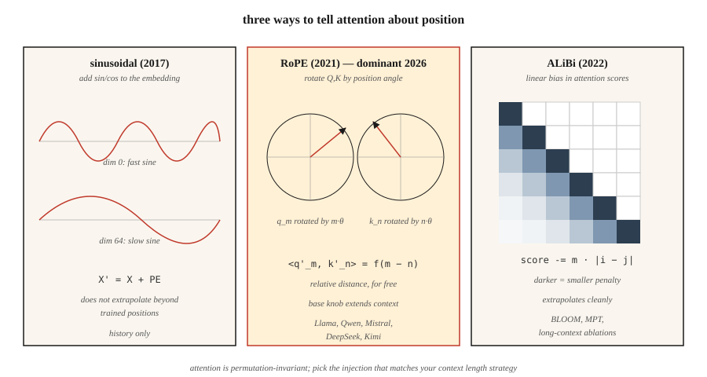

Positional Encoding — Sinusoidal, RoPE, ALiBi
Attention is permutation-invariant. "The cat sat on the mat" and "mat the on sat cat the" produce the same output without positional signal. Three algorithms fix it — each with a different bet on what "position" means.
- Type
- Build
- Languages
- Python
- Prerequisites
- Phase 7 · 02 (Self-Attention), Phase 7 · 03 (Multi-Head Attention)
- Time
- ~45 minutes
#The Problem
Scaled dot-product attention is order-blind. The attention matrix softmax(Q K^T / √d) V is computed from pairwise similarities. Shuffle the rows of X, get the rows of the output shuffled the same way. Nothing inside attention cares about position.
That is not a bug in a bag-of-words model. For language, code, audio, video — anything where order carries meaning — it is fatal.
The fix is to inject position into the embeddings somehow. Three eras of answers:
- Absolute sinusoidal (Vaswani 2017). Add
sin/cosof position to the embedding. Simple, learnable-free, extrapolates poorly beyond trained lengths. - RoPE — Rotary Position Embeddings (Su 2021). Rotate Q and K vectors by an angle proportional to position. Encodes relative position directly in the dot product. Dominant in 2026.
- ALiBi — Attention with Linear Biases (Press 2022). Skip embeddings entirely; add a per-head linear penalty to attention scores based on distance. Excellent length extrapolation.
As of 2026, essentially every frontier open model uses RoPE: Llama 2/3/4, Qwen 2/3, Mistral, Mixtral, DeepSeek-V3, Kimi. A handful of long-context models use ALiBi or its modern variants. Absolute sinusoidal is historical.
#The Concept

#Absolute sinusoidal
Pre-compute a fixed matrix PE of shape (max_len, d_model):
PE[pos, 2i] = sin(pos / 10000^(2i / d_model))
PE[pos, 2i+1] = cos(pos / 10000^(2i / d_model))Then X' = X + PE[:N] before attention. Each dimension is a sinusoid at a different frequency. The model learns to read position from the phase pattern. Fails beyond max_len: nothing told the model what happens at position 2048 when it only saw positions 0–2047.
#RoPE
Rotate the Q and K vectors (not embeddings). For a pair of dimensions (2i, 2i+1):
[q'_2i ] [ cos(pos·θ_i) -sin(pos·θ_i) ] [q_2i ]
[q'_2i+1 ] = [ sin(pos·θ_i) cos(pos·θ_i) ] [q_2i+1 ]
θ_i = base^(-2i / d_head), base = 10000 by defaultApply the same rotation to keys with position pos_k. The dot product q'_m · k'_n becomes a function of (m - n) alone. That is: the attention score depends only on the relative distance, even though the rotation was keyed off absolute positions. Beautiful trick.
Extending RoPE: base can be scaled (NTK-aware, YaRN, LongRoPE) to extrapolate to longer contexts without retraining. Llama 3 extended from 8K to 128K context this way.
#ALiBi
Skip the embedding trick. Bias the attention scores directly:
attn_score[i, j] = (q_i · k_j) / √d - m_h · |i - j|Where m_h is a head-specific slope (e.g. 1 / 2^(8·h/H)). Closer tokens get boosted; far tokens get penalized. No training-time cost. The paper shows length extrapolation beats sinusoidal and matches RoPE on its original trained length.
#What to pick in 2026
| Variant | Extrapolation | Training cost | Used by |
|---|---|---|---|
| Absolute sinusoidal | poor | free | original transformer, early BERT |
| Learned absolute | none | tiny | GPT-2, GPT-3 |
| RoPE | good with scaling | free | Llama 2/3/4, Qwen 2/3, Mistral, DeepSeek-V3, Kimi |
| RoPE + YaRN | excellent | fine-tune stage | Qwen2-1M, Llama 3.1 128K |
| ALiBi | excellent | free | BLOOM, MPT, Baichuan |
RoPE won because it slots into attention without changing the architecture, encodes relative position, and its base hyperparameter gives a clean knob for long-context fine-tuning.
#Build It
#Step 1: sinusoidal encoding
See code/main.py. A 4-line computation:
def sinusoidal(N, d):
pe = [[0.0] * d for _ in range(N)]
for pos in range(N):
for i in range(d // 2):
theta = pos / (10000 ** (2 * i / d))
pe[pos][2 * i] = math.sin(theta)
pe[pos][2 * i + 1] = math.cos(theta)
return peAdd this to the embedding matrix before the first attention layer.
#Step 2: RoPE applied to Q, K
RoPE operates in-place on Q and K. For each pair of dims:
def apply_rope(x, pos, base=10000):
d = len(x)
out = list(x)
for i in range(d // 2):
theta = pos / (base ** (2 * i / d))
c, s = math.cos(theta), math.sin(theta)
a, b = x[2 * i], x[2 * i + 1]
out[2 * i] = a * c - b * s
out[2 * i + 1] = a * s + b * c
return outCrucial: apply the same function to Q at position m and K at position n. Their dot product picks up a cos((m-n)·θ_i) factor on every coordinate pair. Attention learns relative position for free.
#Step 3: ALiBi slopes and bias
def alibi_bias(n_heads, seq_len):
# slope_h = 2 ** (-8 * h / n_heads) for h = 1..n_heads
slopes = [2 ** (-8 * (h + 1) / n_heads) for h in range(n_heads)]
bias = []
for m in slopes:
row = [[-m * abs(i - j) for j in range(seq_len)] for i in range(seq_len)]
bias.append(row)
return bias # add to attention scores before softmaxAdd bias[h] to the (seq_len, seq_len) attention score matrix of head h, then softmax.
#Step 4: verify relative-distance property of RoPE
Pick two random vectors a, b. Rotate by (pos_a, pos_b). Then by (pos_a + k, pos_b + k). Both dot products must match within floating-point error. That property is the whole point of RoPE — it is invariant to the absolute offset, only the relative gap matters.
#Use It
PyTorch 2.5+ ships RoPE utilities in torch.nn.functional. Most production code uses flash_attn or xformers where RoPE is applied inside the attention kernel.
from transformers import AutoModel
model = AutoModel.from_pretrained("meta-llama/Llama-3.2-3B")
# model.config.rope_scaling → {"type": "yarn", "factor": 32.0, "original_max_position_embeddings": 8192}Long-context tricks in 2026:
- NTK-aware interpolation. Rescale
basetobase * (scale_factor)^(d/(d-2))when extending from 4K to 16K+. - YaRN. Smarter interpolation that preserves attention entropy on long contexts. Llama 3.1 128K uses it.
- LongRoPE. Microsoft's 2024 method that uses evolutionary search to pick per-dimension scale factors. Phi-3-Long uses it.
- Position interpolation + fine-tuning. Just shrink positions by the extension factor and fine-tune for 1–5B tokens. Surprisingly effective.
#Ship It
See outputs/skill-positional-encoding-picker.md. The skill picks an encoding strategy for a new model given target context length, extrapolation needs, and training budget.
#Exercises
- Easy. Plot the sinusoidal
PEmatrix as a heatmap formax_len=512, d=128. Confirm the "stripes get wider as dimension index grows" pattern. - Medium. Implement NTK-aware RoPE scaling. Train a tiny LM on sequences of length 256, then test on length 1024 with and without scaling. Measure perplexity.
- Hard. Implement ALiBi and RoPE in the same attention module. Train a 4-layer transformer on a copy task with sequences of length 512. Extrapolate to 2048 at test time. Compare degradation.
#Key Terms
| Term | What people say | What it actually means |
|---|---|---|
| Positional encoding | "Tells attention about order" | Any signal added to embeddings or attention that encodes position. |
| Sinusoidal | "The original one" | sin/cos at geometric frequencies added to embeddings; doesn't extrapolate. |
| RoPE | "Rotary embeddings" | Rotate Q, K by position-dependent angle; dot product encodes relative distance. |
| ALiBi | "Linear bias trick" | Add -m·|i-j| to attention scores; no embedding needed, great extrapolation. |
| base | "RoPE's knob" | The frequency scaler in RoPE; increase to extend context at inference. |
| NTK-aware | "A RoPE scaling trick" | Rescale base so high-frequency dims aren't squeezed when context expands. |
| YaRN | "The fancy one" | Per-dimension interpolation+extrapolation that preserves attention entropy. |
| Extrapolation | "Works beyond trained length" | Can the position scheme serve correct output past max_len seen in training? |
#Further Reading
- Vaswani et al. (2017). Attention Is All You Need §3.5 — original sinusoidal.
- Su et al. (2021). RoFormer: Enhanced Transformer with Rotary Position Embedding — RoPE paper.
- Press, Smith, Lewis (2021). Train Short, Test Long: Attention with Linear Biases Enables Input Length Extrapolation — ALiBi.
- Peng et al. (2023). YaRN: Efficient Context Window Extension of Large Language Models — state of the art RoPE scaling.
- Chen et al. (2023). Extending Context Window of Large Language Models via Positional Interpolation — Meta's Llama 2 long-context paper.
- Ding et al. (2024). LongRoPE: Extending LLM Context Window Beyond 2 Million Tokens — the Microsoft method used by Phi-3-Long and cited in the Use It section.
- HuggingFace Transformers —
modeling_rope_utils.py— production-grade implementations of every RoPE scaling scheme (default, linear, dynamic, YaRN, LongRoPE, Llama-3).
Nice. That's 5 minutes of Transformers Deep Dive behind you.
Continue to The Full Transformer — Encoder + Decoder →